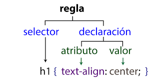
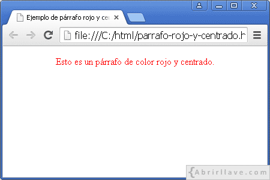

Hojas de estilo en cascada (Cascading Style Sheets (CSS))¶
Hojas de estilo en cascada (Cascading Style Sheets (CSS))¶
CSS es un lenguaje de estilo utilizado para definir la presentación y el diseño de documentos HTML . Con CSS, se puede controlar la apariencia de los elementos de una página web , como el color de fondo, la tipografía, el espaciado, los bordes y la disposición de los elementos en pantalla.
Una hoja de estilos es un archivo con extensión .CSS que contiene los formatos de texto prediseñados de algunas etiquetas.
El archivo .CSS debe ir junto al archivo .HTML, aunque también puede incluirse el contenido del archivo .CSS dentro del archivo .HTML.
Las hojas de estilo están formadas por reglas, y las reglas están formadas por el selector y entre llaves las declaraciones separadas por punto y coma.
Una declaración es un atributo (propiedad) seguido por dos puntos y a continuación el valor de la propiedad.

Tipos de selectores¶
Selector Universal¶
El selector universal (*) es útil cuando deseas aplicar un estilo a todos los elementos en una página web sin excepción. Es una forma rápida y sencilla de establecer reglas generales que afectarán a todos los elementos en el documento. Por ejemplo, si deseas eliminar todos los márgenes y rellenos predeterminados de los elementos en tu página para empezar desde cero, puedes usar el selector universal para restablecerlos.
Sintaxis: * { atributo:valor; }
* { color: grey; }/* El estilo se aplicará a todos los elementos de la página*/
Selector etiqueta¶
El selector de etiqueta aplica el estilo a todas las etiquetas HTML de ese tipo que haya en la página (y a las subetiquetas que estén contenidas en ella).
Sintaxis: etiqueta { atributo:valor }
p {color: green;} /* El estilo se aplicará a todos los elementos <p>.*/
Jerarquía de selectores
En CSS, cuando varias reglas podrían aplicarse a un mismo elemento, el navegador decide cuál usar siguiendo una jerarquía de especificidad. Los selectores más específicos tienen prioridad sobre los generales. Por ejemplo, el selector universal * afecta a todos los elementos, pero cualquier regla para un selector de etiqueta (p, h1) sobrescribirá al universal en esos elementos.
Aplicar los estilos a las páginas¶
Para aplicar un estilo o un conjunto de estilos CSS a una página web , tenemos varias alternativas:
-
Definir los estilos en el bloque head de la página
Podemos también definir todo el conjunto de estilos de la página en su bloque
head, empleando para ello una etiquetastyleque englobe todas las reglas. Por ejemplo, para aplicar los dos estilos del ejemplo anterior (para párrafos yh1) a toda la página, pondríamos algo como esto en elhead:<!DOCTYPE html> <html lang="es-ES"> <head> <meta charset="utf-8" /> <title>Ejemplo de párrafo rojo y centrado</title> <style> p { color: red; text-align: center; } </style> </head> <body> <p>Esto es un párrafo de color rojo y centrado.</p> </body> </html>
Texto en rojo Esta opción tampoco es muy recomendable si queremos aplicar el mismo estilo en diversas páginas, porque tendríamos que repetir el mismo bloque
styleen todas, con los consiguientes problemas de duplicidad que tendríamos si queremos hacer cualquier cambio. -
Definir los estilos en un documento CSS aparte
Como segunda alternativa (y la más recomendable en la mayoría de casos), podemos definir todos los estilos en un documento CSS aparte, guardado con extensión
css, y después enlazar ese archivo con la página web , desde elheadde la misma. Por ejemplo, si el archivo de estilos lo hemos llamadoestilos.cssy está en la misma carpeta que la página web donde aplicarlo, pondríamos algo así en elhead(el atributotypees opcional):<!DOCTYPE html> <html lang="es-ES"> <head> <meta charset="utf-8"> <title>Ejemplo de párrafo rojo y centrado</title> <link rel="StyleSheet" href="estilos.css" type="text/css"> </head> <body> <p>Esto es un párrafo de color rojo y centrado.</p> </body> </html>p { color:red; text-align:center; }
Estilos básicos CSS¶
Algunas de las propiedades CSS relacionadas con el color y el fondo más utilizadas son las siguientes:
-
Color del texto
colorLa propiedad color se utiliza para definir el
colordel texto en un elemento HTML.p { color: #FF0000; /* Color rojo en formato HEX */ } -
Color de fondo
background-colorLa propiedad
background-colorse utiliza para establecer el color de fondo de un elemento HTML, como un div o una sección..a { background-color: red; } .b { background-color: #FF0000; } .c { background-color: RGB(255,0,0); } /*Color rojo en formato RGB*/ .d { background-color: HSL(0,100%,50%); } .e { background-color: red; opacity: 0.5; } .f { background-color: rgba(255, 0, 0, 0.5); } .g { background-color: transparent; } -
Formato de fuente
Las propiedades CSS de las fuentes son las que permiten controlar el tamaño, el tipo, el grosor o el estilo de las letras, entre otras cosas. En la siguiente tabla se muestran las propiedades de las fuentes más destacadas.
Las propiedades de las fuentes más utilizadas son:
Propiedad Descripción Valores Ejemplo font-familyFamilias de fuentes nombre-familia / * .a { font-family: "Times New Roman", Times, serif; }font-styleEstilo de la fuente normal / italic / oblique .a { font-style: normal; }font-variantConvierte a mayúsculas manteniendo todas las letras en un tamaño inferior a la primera normal / small-caps .a { font-variant: normal; }font-weightAnchura de los caracteres. Normal = 400, Negrita = 700 normal / bold / bolder / lighter / 100 / 200 / 300 / 400 / 500 / 600 / 700 / 800 / 900 .a { font-weight: normal; }font-sizeTamaño de la fuente xx-small / x-small / small / medium / large / x-large / xx-large / larger / smaller / longitud / porcentaje .a { font-size: 20px; }
Actividad
📝 AA4.17 Identificación de selectores¶
(C.ESP2 / CE2.4 / IC1-3p)
Observando el siguiente código HTML contesta:
- ¿De qué color se mostrará el texto del título
<h1>? - ¿De qué color se mostrarán los párrafos
<p>? - ¿Por qué los párrafos no se ven del mismo color que el título?
<!DOCTYPE html>
<html lang="es">
<head>
<meta charset="UTF-8">
<title>Ejercicio CSS</title>
<style>
* {
color: blue;
}
p {
color: red;
}
</style>
</head>
<body>
<h1>Título de la página</h1>
<p>Este es el primer párrafo</p>
<p>Este es el segundo párrafo</p>
</body>
</html>
Solución
-
¿De qué color se mostrará el texto del título
<h1>? Azul El selector universal*aplica el color azul a todos los elementos de la página. Como no hay ningún selector específico para<h1>, el título mantiene ese color. -
¿De qué color se mostrarán los párrafos
<p>? Rojo Aunque el selector universal pone todo en azul, el selector de etiqueta p es más específico. Por eso, el color rojo sobrescribe al azul solo en los párrafos. -
¿Por qué los párrafos no se ven del mismo color que el título? Porque tienen una regla CSS más específica.
* → afecta a todo
p → afecta solo a los párrafos
Cuando hay varias reglas, el navegador aplica la más concreta.
Actividad
📝 AA4.18 Escribe el selector correcto¶
(C.ESP2 / CE2.4 / IC1-3p)
Partiendo del siguiente código HTML :
<h1>Mi web personal</h1>
<p>Bienvenido a mi página</p>
<p>Esta web es un ejemplo</p>
Escribe las reglas CSS necesarias para que:
- Todo el texto de la página sea de color gris.
- Solo los párrafos sean de color verde.
- El título sea de color azul.
Solución
* {
color: grey;
}
p {
color: green;
}
h1 {
color: blue;
}
Actividad
📝 AA4.19 Tu primera página web con estilo¶
(C.ESP2 / CE2.4 / IC1-3p)
Edita la página web que creaste en el ejercicio anterior y añade estilos.
- El color del fondo
background-colora azul. - La fuente
font-familyaArial. - El tamaño de la letra
font-sizea 14. - El color del texto
colora blanco.
Actividad
🏆 R4.20 Reto en grupo¶
(C.ESP2 / CE2.4 / IC4-60p)
Partiendo de la página web sobre un tema libre que realizaste en el reto anterior, añade estilos para que sea lo más atractiva posible según lo visto en clase.
Actividad
🔨 AAR4.21 Estilo en el currículum Estilo en el currículum¶
(C.ESP2 / CE2.4 / IC1-3p)
Teniendo como base todo lo aprendido en esta unidad de trabajo, se pide que seas original y apliques colores, tamaños, estilos de texto al curriculum realizado en la actividad anterior.
Los estilos que se esperan son:
- Color del fondo.
- Colore del texto.
- Formato de fuente.
Referencias¶
- w3schools Tutorial CSS